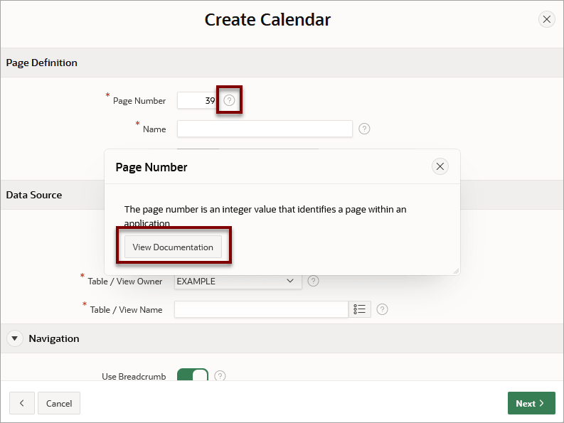

2.8 Using Oracle APEX Documentation
Oracle APEX provides field-level help, a hosted online documentation library, and links to the documentation from the product. From the APEX Documentation page in the Oracle Help Center, you can browse content by publication, search content, or download the entire documentation library.
- About Oracle Help Center
Access Oracle Help Center by clicking Documentation on the Help menu. - Downloading the Documentation Library
Download a ZIP file of the online documentation library. - Redirecting the Help Menu
Redirect the Help menu at the instance level. - Viewing Field-Level and Page Designer Help
Learn about field-level Help and Help in Page Designer.
Parent topic: Quick Start
2.8.1 About Oracle Help Center
Access Oracle Help Center by clicking Documentation on the Help menu.
Oracle Help Center publishes a comprehensive library of publications for each Oracle APEX release. Whether you are new to APEX or an advanced user, you can find useful information about building stunning, scalable, secure apps with Oracle APEX.
Using Oracle Help Center
Oracle Help Center contains documentation for Oracle products, with a specific page for Oracle APEX Documentation.
When viewing a publication on Oracle Help Center, you can access the home page for the current Oracle APEX release by clicking the Release number breadcrumb. When the release page appears, you can:
- Browse topics by selecting a subject area.
- View all publications in the library by selecting Books in the left navigation menu.
- Download the library locally by selecting Download.
Using Documentation Links in Oracle APEX
From Oracle APEX, access Oracle Help Center by clicking the Help menu and selecting Documentation, or clicking a Learn More... link in the product UI.
Description of the illustration help_ico.png
You can also access the documentation by clicking the item-level help, and then View Documentation. 
Description of the illustration attribute_level_view_documentation.png
Clicking a documentation link from the product redirects you to the appropriate book or section of the book.
Parent topic: Using Oracle APEX Documentation
2.8.2 Downloading the Documentation Library
Download a ZIP file of the online documentation library.
To download the online documentation library:
Parent topic: Using Oracle APEX Documentation
2.8.3 Redirecting the Help Menu
Redirect the Help menu at the instance level.
Administrators can redirect the Help menu at the instance level in Manage Instance, Instances Settings in the Oracle APEX Administration Services application. APEX Administration Services is a separate application that enables an instance administrator to manage an entire APEX hosted instance. This functionality is not available to some customers who are using a hosted instance.
See Also:
Configuring the Help Menu in Oracle APEX Administration Guide
Parent topic: Using Oracle APEX Documentation
2.8.4 Viewing Field-Level and Page Designer Help
Learn about field-level Help and Help in Page Designer.
Most select lists, checkboxes, items, and fields within APEX include field-level Help. Page Designer also includes Help for all Property Editor attributes.
Parent topic: Using Oracle APEX Documentation
2.8.4.1 Viewing Field-Level Help in Oracle APEX
To view field-level help:
See Also:
Parent topic: Viewing Field-Level and Page Designer Help
2.8.4.2 Viewing Help in Page Designer
To view Help in Page Designer:
Parent topic: Viewing Field-Level and Page Designer Help